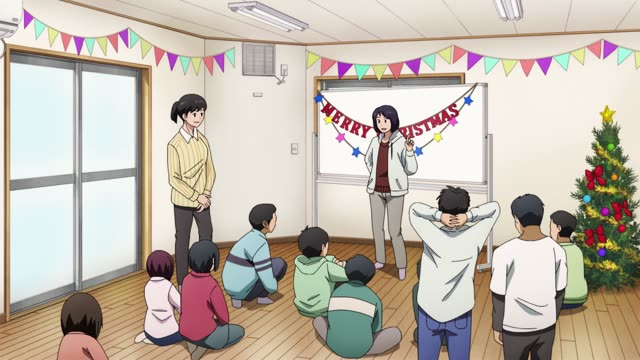
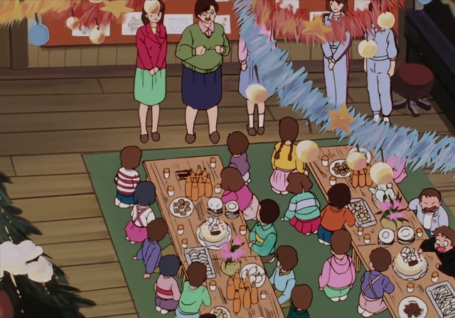

くれる・てくれる
Samurai Champloo · Episode 26
母さんが死ぬとき、そう教えてくれました。
"When my mom was dying, that's what she told me."
くれる means someone gives to me (or to my side: my family, my friends). After a て-form it means someone does something for me.
On this card: 教えて + くれる, "told me", as something she gave him. It answers "Who told you that?": my mom.
Polite past: くれました. Casual: くれた.

Shirokuma Cafe · Episode 2
じゃ、白熊君、肩揉んでくれる？
"Then, Polar Bear, will you massage my shoulders?"
Casual: plain くれる. Asked as a question, it's a friendly favor: "will you do this for me?"
Quick Examples
Your friend just got back from Kyoto and handed you a box of sweets. You tell your sister.
友達がお土産をくれた。
"My friend gave me a souvenir."
Plain くれる: the thing comes to me. No "me" needed, くれる already says it.
CasualA coworker likes your new pen and asks where it's from.
これ、部長がくれました。
"My boss gave me this."
Only toward you or your side. When YOU give something, it's a different verb (あげる).
PoliteYou missed the bus, but your mom drove you to the station.
母が駅まで送ってくれました。
"My mom drove me to the station."
送って + くれる: she did it for me.
PoliteYour friend is about to leave, but you need one more minute.
ちょっと待ってくれる？
"Can you wait a sec?"
A question with くれる = asking a favor.
CasualWith and without
友達が手伝いました。
"My friend helped." Just a fact. Helped who? Not said.
友達が手伝ってくれました。
"My friend helped me out." It was for me, and I'm glad.
Examples from Media

The Way of the Househusband · Episode 4
みんなのためにサンタさんが来てくれてます。
"Santa has come for everyone."
来てくれる = "come for us", a kindness. てます is the spoken ています.
Aggretsuko · Season 1, Episode 7
社長も分かってくれますよ。
"The boss will understand too."
分かってくれる = "understand (for me)", be on my side.

Oishinbo · Episode 87
サンタクロースさんが来てくれました。
"Santa Claus has come to see us."
来て + くれました. Santa came, for us.
Vinland Saga · Episode 19
教えてくれ。
"Tell me."
てくれ: a rough request, "do it for me".

Shirokuma Cafe · Episode 12
パンダのストラップもつけてくれるし
"And they even put a panda strap on it for you."
つけて + くれる: the shop does it for you.
Goblin Slayer · Episode 10
大好物のシチューを作ってくれた。
"She made my favorite stew for me."
Casual past: くれた. 大好物 = "favorite food".
Death Note · Episode 5
ちょっと待ってくれ。
"Wait a second."
Slam Dunk · Episode 43
任せてくれ。
"Leave it to me."
Further Reading
A Dictionary of Basic Japanese Grammar
Entry "kureru¹" · pp. 213–216
Entry "kureru²" · pp. 216–219
Tae Kim's Guide to Japanese Grammar
Giving and Receiving · When to use 「くれる」
Giving and Receiving · Asking favors with 「くれる」 or 「もらえる」